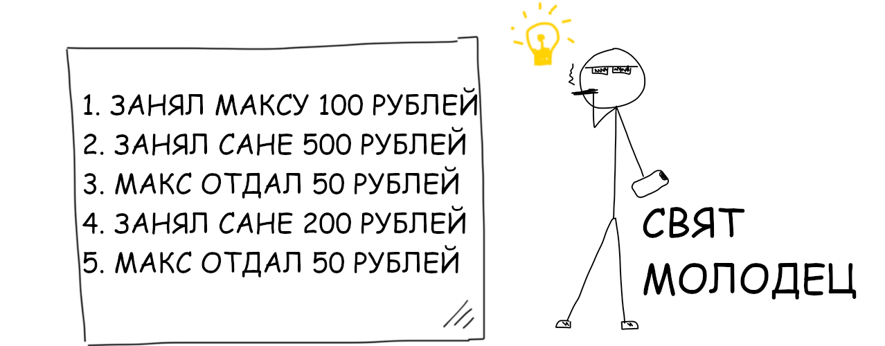

Блокчейн — цепочка блоков или другими словами связный список.
В таком списке каждая следующая запись ссылается на одну предыдущую
и так по цепочке до самой первой. Как вагоны поезда, каждый тащит за собой следующий.
Разберем на примере.
Друзья Свята постоянно занимают у него деньги. Свят добр, но крайне забывчив.
Через неделю он уже не помнит кто не вернул ему долг,
но стесняется всех об этом расспрашивать. Потому однажды он решил положить этому конец,
заведя у себя дома на доске список друзей, которым он занимал денег.

Теперь Свят всегда может подойти к доске и убедиться, что Макс всё вернул,
а вот Ваня не отдает уже 700 рублей. Однажды Свят приглашает Саню выпить к себе домой.
Пока Свят отходит в туалет, Саня стирает запись «Занял Сане 200 рублей»
и вписывает вместо неё «Саня отдал 500 рублей».
Доверявший своему списку Свят забывает про долг и теряет 700 рублей. Он решает как-то с этим бороться.